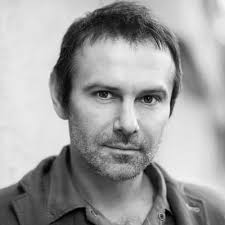

ПРЕЗИДЕНТСЬКІ ВИБОРИ 2019 РОКУ
Як змінювалися рейтинги політиків в Україні після виборів 2014 року
| КАНДИДАТ | ФОТО | Травень 2014 р. | Жовтень 2015 р. | Листопад 2016 р. | Листопад 2017 р. | Червень 2018 р. | Серпень 2018 р. | Жовтень 2018 р. |
| ЮЛІЯ ТИМОШЕНКО | | 12.8% | 16.0% | 11.0% | 16.0% | 16.0% | 17.7% | 18.9% |
| ВОЛОДИМИР ЗЕЛЕНСЬКИЙ | | Н/Д | Н/Д | Н/Д | Н/Д | 9.3% | 8.0% | 10.7% |
| ПЕТРО ПОРОШЕНКО | | 54.7% | 26.0% | 9.0% | 15.4% | 8.6% | 8.3% | 9.9% |
| АНАТОЛІЙ ГРИЦЕНКО | | 5.5% | 6.0% | 2.0% | 10.2% | 11.7% | 10.7% | 9.9% |
| ЮРІЙ БОЙКО | | 0.2% | 12.0% | 4.0% | 10.5% | 10.5% | 8.9% | 9.8% |
| ОЛЕГ ЛЯШКО | | 8.3% | 7.0% | 3.0% | 7.8% | 8.6% | 8.5% | 8.0% |
| ВАДИМ РАБІНОВИЧ | | 2.3% | 7.0% | 7.8% | 8.6% | 8.5% | 8.0% | 8.0% |
| СВЯТОСЛАВ ВАКАРЧУК |  | Н/Д | Н/Д | Н/Д | Н/Д | 8.6% | 8.0% | 8.0% |
| ОЛЕГ ТЯГНИБОК | | 1.2% | 4.0% | 1.0% | 4.6% | 2.8% | 2.1% | 2.6% |
| АНДРІЙ САДОВИЙ | | Н/Д | 9.0% | 3.0% | 7.7% | 3.4% | 2.3% | 2.6% |
Нам цікава Ваша думка щодо майбутніх виборів президента
Перейти на сторінку опитування